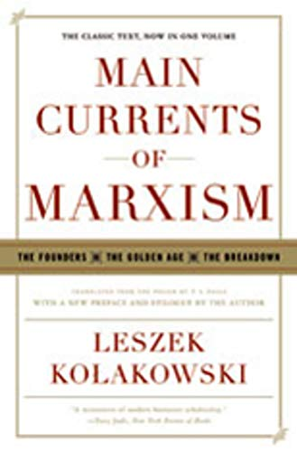
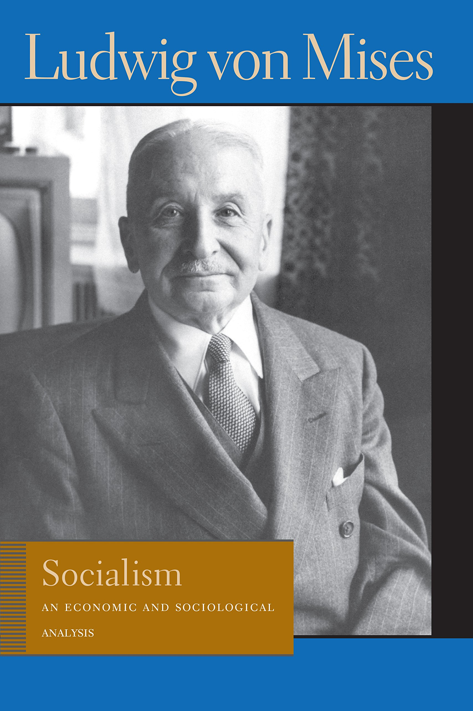

Ver também
- Leszek Kolakowski and the Debate Over Marxism in the 20th Century - Roger Kimball (https://www.youtube.com/watch?v=iX00exJgwF4)
- WHAT IS LEFT OF SOCIALISM (https://www.firstthings.com/article/2002/10/what-is-left-of-socialism)
- Is God Happy? (https://www.nybooks.com/articles/2012/12/20/is-god-happy/)
- What the Past Is For (https://www.loc.gov/loc/lcib/0312/kluge3.html)
-
-
"Em 1970 Leszek Kolakowski já anunciava que o maior perigo do marxismo residia em seu potencial de destruição da cultura. O raciocínio imanente à nova barbárie era simples: se a cultura é superestrutura do domínio de classes, é obrigação da nova era igualitária fazer tábua rasa, destruir o patrimônio milenar de idéias e valores, substituir toda a bibliografia universal pelo Livro Vermelho dos Pensamentos do Presidente Mao ou porcaria equivalente."
Um lindo casamento (http://olavodecarvalho.org/um-lindo-casamento) - Estudar antes de falar (http://olavodecarvalho.org/estudar-antes-de-falar/)
Mais livros

Ludwig von Mises
Pierre Drieu La Rochelle